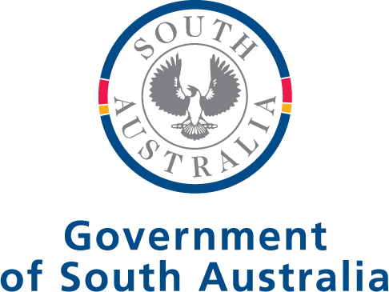

OPENING MID-2027
Port Augusta Centre for Rural Health & Education.
Discover what’s insideDesigned for
a healthier future.
A $21 million project designed to increase primary health care access and grow the health workforce across Far North SA.
Health.
Increased access to multidisciplinary primary health care, with a bulk-billed GP and nurse-led primary health service when the centre opens.
For the local Port Augusta community and RFDS outback patients visiting for care.
Education.
Fit-for-purpose facilities for School of the Air, supporting educational services for isolated children.
Training.
A training base offering placements for junior doctors and medical, nursing and allied health students, in partnership with education providers.
Together under
one roof.
Health, education and training, brought together for our communities.
Supporting rural &
remote communities.
For Port Augusta locals: An additional option for primary health care, alongside the important health services already available in the community.
For RFDS outback patients: Complementing existing fly-in services across remote SA to support access to care.
Thanks to
our partners.
The project received $1 million in seed funding from BHP Copper SA and $1 million from the South Australian Government’s Enabling Infrastructure Program.
The balance was financed through RFDS fundraising and community donations.

Frequently asked questions
What is the new Port Augusta Centre for Rural Health & Education?
The Port Augusta Centre for Rural Health & Education will bring clinical care, education and training together under one roof to increase primary health care access and grow the health workforce across Far North SA.
Once operational, the centre will provide a bulk-billed GP and nurse-led primary health service, education and training facilities, clinical placement opportunities for undergraduate students, and fit-for-purpose facilities for School of the Air.
The centre will support people living in Port Augusta and the surrounding region, as well as RFDS outback patients who visit Port Augusta for care.
When will the centre open?
With construction now complete and work underway to establish the clinical service, the centre is scheduled to formally open in mid-2027. More information about how to become a patient and register for services will be provided closer to the opening.
Can existing RFDS patients use the new centre?
The centre is designed to support the local Port Augusta community and RFDS’s existing outback patients when they visit Port Augusta for care.
Will I need to book an appointment?
Details about how to book appointments will be shared closer to the centre’s opening in mid-2027.
Will the centre replace the RFDS base at Port Augusta Airport?
The new centre will complement the RFDS’s existing Port Augusta airport base, from which the RFDS currently operates 24-hour emergency retrievals and inter-hospital transfer flights, 24-hour urgent telehealth consultations and outreach fly-in primary health care clinics.
How will the centre improve care for patients?
The centre’s modern, contemporary and purpose-built design, combined with the RFDS’s commitment to high-quality care will create a welcoming environment to enhance the patient experience.
Over time, the centre will bring different health professionals and services together, fostering whole-of-life care collaboration.
How will the centre help attract the next generation of rural health professionals?
The centre will provide a hub for junior doctors, medical, nursing and allied health undergraduates to learn and work alongside experienced practitioners in a real-world healthcare setting.
Who funded this project?
The $21 million project received $1 million seed funding from both BHP Copper SA and the SA Government’s Enabling Infrastructure Program, with the balance of the project financed by RFDS fundraising and donations from the community.
What is School of the Air’s role at the centre?
School of the Air is the first partner located at the centre, with fit-for-purpose facilities to enhance learning for Reception to Year 6 students living in outback communities across South Australia.
The two organisations have a long history, with Open Access College’s SOTA delivering its first lessons to outback students in 1951, using the Flying Doctor’s two-way radio network.